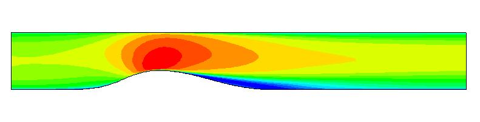

 |
Turbulence Modeling Resource |
This web page gives detailed information on the equations for Menter's SST-based \(\gamma\) transition model. All forms of the model given on this page are linear eddy viscosity models. Linear models use the Boussinesq assumption for the constitutive relation:
\[ \tau_{ij} = 2\mu_t(S_{ij}-\frac{1}{3}\frac{\partial u_k}{\partial x_k}\delta_{ij}) -\frac{2}{3}\rho k \delta_{ij} \] Unless otherwise stated, for compressible flow with heat transfer this model is implemented as described on the page Implementing Turbulence Models into the Compressible RANS Equations, with perfect gas assumed and Pr = 0.72, Prt = 0.90, and Sutherland's law for dynamic viscosity.
Return to: Turbulence Modeling Resource Home Page
The primary reference for the implementation of this model is:
\[ \frac{\partial\gamma}{\partial t}+ \frac{\partial(\rho U_j \gamma)}{\partial x_j} = P_\gamma - E_\gamma + \frac{\partial}{\partial x_j}[(\mu+\frac{\mu_t}{\sigma_\gamma})\frac{\partial \gamma}{\partial x_j}] \] The source terms for the \(\gamma\) equation are defined as:
\[ P_\gamma = F_{length}\rho S \gamma (1-\gamma)F_{onset}\] \[ E_\gamma = c_{a2}\rho\Omega\gamma F_{turb}(c_{e2}\gamma-1)\]
where, \[ \begin{aligned} &F_{onset1}=\frac{Re_v}{2.2Re_{\theta c}} \\ &F_{onset2}=\text{min}(F_{onset1},2.0) \\ &F_{onset3}=\text{max}(1-(\frac{R_T}{3.5})^3,0) \\ &F_{onset}=\text{max}(F_{onset2}-F_{onset3},0) \\ &Re_v=\frac{\rho d_w^2S}{\mu} \\ &Re_{\theta c} = f(Tu_L,\lambda_{\theta L})\\ &R_T=\frac{\rho k}{\mu \omega} \\ &F_{turb}=e^{-(\frac{R_T}{2})^4} \end{aligned} \] The model constants are: \[ \begin{aligned} &F_{length}=100.0 \\ &c_{e2} = 50.0 \\ &c_{a2} = 0.06 \\ &\sigma_{\gamma}= 1.0 \end{aligned} \] In the above equations, \(\rho\) is the density, \(\mu\) is the molecular viscosity, \(d_w\) is wall distance, \(S=\sqrt{2S_{ij}S_{ij}}\) is the strain rate magnitude, and \(\Omega=\sqrt{2W_{ij}W_{ij}}\) is the vorticity magnitude, with \[ \begin{aligned} &S_{ij}=\frac{1}{2}(\frac{\partial u_i}{\partial x_j}+\frac{\partial u_j}{\partial x_i}) \\ &W_{ij}=\frac{1}{2}(\frac{\partial u_i}{\partial x_j}-\frac{\partial u_j}{\partial x_i}) \\ \end{aligned} \] For calculating \(Re_{\theta c}\), one needs to compute \(Tu_L\) and \(\lambda_{\theta L}\), which are defined as follows:
\[ Tu_L=\text{min}(100\frac{\sqrt{2k/3}}{\omega d_w},100) %\]
\[ \lambda_{\theta L} = -7.57\cdot10^{-3}\frac{dV}{dy}\frac{d_w^2}{\nu}+0.0128 \] In the above equations, \(V\) and \(y\) are the local wall-normal velocity and the wall-normal direction respectively. For a general geometry case, \(\frac{dV}{dy}\) can be computed as follows:
\[ \frac{dV}{dy}= \nabla(\vec{n}\cdot \vec{V})\cdot \vec{n} \]
The expression to compute \(Re_{\theta c}\) is given as follows:
\[ Re_{\theta c} (Tu_L,\lambda_{\theta L})= C_{Tu1}+C_{Tu2} exp [-C_{Tu3}Tu_L F_{PG}(\lambda_{\theta L})] \]
\[ F_{PG}= \begin{cases} \text{min}(1+C_{PG1}\lambda_{\theta L},C_{PG1}^{lim}), \lambda_{\theta L} \geq 0 \\ \text{min}(1+C_{PG2}\lambda_{\theta L}+C_{PG2}\text{min}[\lambda_{\theta L}+0.0681,0],C_{PG2}^{lim}), \lambda_{\theta L} < 0 \end{cases} \]
The model constants for the above expressions are as follows:
\[ \begin{aligned} &C_{TU1} = 100.0 \\ &C_{TU2} = 1000.0 \\ &C_{TU3} = 1.0 \\ &C_{PG1} = 14.68 \\ &C_{PG2} = -7.34 \\ &C_{PG3} = 0.00 \\ &C_{PG1}^{lim} = 1.5 \\ &C_{PG2}^{lim} = 3.0 \\ \end{aligned} \]
This model is Galilean invariant
The \(\gamma\) transition model is coupled to the SST-2003 turbulence model, similar to the Langtry-Menter transition model. The coupling process, requires a few modifications to the standard SST-2003 model.The equations describing the turbulence model, as coupled to the transition model, are as follows:
\[ \frac{\partial \rho k}{\partial t} + \frac{\partial \rho u_j k}{\partial x_j} =\widetilde{P_k} + P_k^{lim} - \widetilde{D_k} + \frac{\partial }{\partial x_k} [(\mu+\sigma_k\mu_t)\frac{\partial k}{\partial x_j}] \] \[ \frac{\partial \rho \omega}{\partial t} + \frac{\partial \rho u_j \omega}{\partial x_j} =\alpha \frac{P_{k}}{\nu_t} - D_{\omega,SST} + \frac{\partial }{\partial x_k} [(\mu+\sigma_{\omega}\mu_t)\frac{\partial \omega}{\partial x_j}] +2(1-F_1)\frac{\rho \sigma_{\omega 2}}{\omega} \frac{\partial k}{\partial x_j} \frac{\partial \omega}{\partial x_j} \] The source terms in the above two equations are defined as follows: \[ \begin{aligned} & \widetilde{{P_k}}=\gamma P_{k} \\ & P_k = \mu_t S \Omega \\ & \widetilde{D_k}= \text{max}(\gamma,0.1)\cdot D_{k,SST} \\ & \mu_t=\frac{\rho a_1 k}{\text{max}(a_1\omega, SF_2)} \\ & P_k^{lim} = 5C_k \text{max}(\gamma -0.2,0)(1-\gamma)F_{on}^{lim} \text{max}(3C_{sep}\mu-\mu_t,0)S\Omega\\ &F_{on}^{lim} = \text{min}[\text{max}(\frac{Re_v}{2.2 Re_{\theta c}^{lim}}-1,0),3] \\ & F_1=\text{max}(F_{1,SST},F_3) \\ & F_3 = e^{-(\frac{R_y}{120})^8} \\ & R_y = \frac{\rho d_w \sqrt{k} }{\mu} \\ \end{aligned} \] The model constants for the above expressions are as follows: \[ \begin{aligned} & Re_{\theta c}^{lim} = 100.0 \\ &C_{TU2} = 1100.0 \\ &C_k = 1.0 \\ &C_{sep} = 1.0 \\ \end{aligned} \]
In the above equations describing the turbulence model, the subscript 'SST' refers to the functional definitions of the base SST model being used, which is the SST-2003 in this case. The constants in the above equations are that from the baseline turbulence model.
Note:
The boundary conditions for \(\gamma\) are
\[ \begin{aligned} \frac{\partial \gamma}{\partial n}|_{wall} = 0 \\ \gamma_{farfield} = 1.0 \\ \end{aligned} \]
For numerical robustness, the following limiters are enforced: \[ -1\leq \lambda_{\theta L} \leq 1 \]
\[ F_{PG}=\text{max}(F_{PG},0) \]
Unless stated otherwise above, the functional definitions and calibration constants of the underlying SST-2003 turbulence model should not be altered when used with the \(\gamma\) transition model.
Suggested Nomenclature
The model as described above should be referred to as SST-2003-Menter-\(\gamma\)-2015 model. If it is based off the SST-2003m turbulence model, then it should be referred to as SST-2003m-Menter-\(\gamma\)-2015 model.
Balaji Venkatachari of NIA is acknowledged for putting together this page.
Recent significant updates:
2/17/2026 - created page
Page Curators: Christopher Rumsey,
Ethan Vogel,
Clark Pederson
Last Updated: 02/17/2026